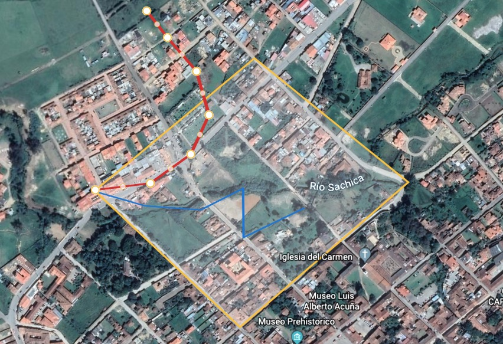

Panel de seguimiento de proyecto
GANADERÍA LONG RANGE
En este panel se presenta el proyecto de la red de monitoreo de posición de nodos Long-Range.
- General
Skecth y linea de progreso del proyecto - Requerimiento
Desarrollo pedido por el cliente - Desarrollo
Archivos, Renders, modelados y fechas

Vista general del proyecto
Proporcionamos una Red de Monitoreo continua y permanente que, por medio de un sistema de comunicación a larga distancia que permite obtener información para Big Data de las variables medidas.
Red de Monitoreo:
- Control en tiempo real
- Ubicación GPS
- Geocercas Modificables
- Notificación e historial
- Estadísticas
A continuación se muestra las pruebas fase 1, tracking de dos dispositivos
Tracking dispositivos Villa de Leyva - Octubre 2019
Requerimiento
Para la efectiva gestión de control del ganado en las regiones de Colombia, se requiere monitoreo y seguimiento continuo de los bovinos para evitar el robo indiscriminado de los mismos.
Objetivo General:
- Implementar una Red de Monitoreo continua del ganado en geocercas modificables con comunicación a larga distancia.
Objetivos Específicos:
o Monitorear el geolocalización de las cabezas de ganado
o Establecer el perímetro de geocercas para el control de ganado
o Notificar la extracción del ganado fuera del perímetro establecido
o Recopilar datos del flujo y trayectoria de ganado
o Obtener resultados en estadísticas
o Enviar datos a la nube